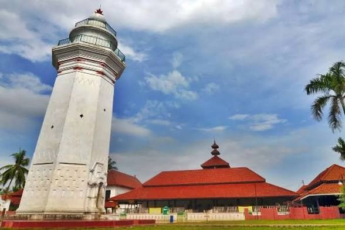
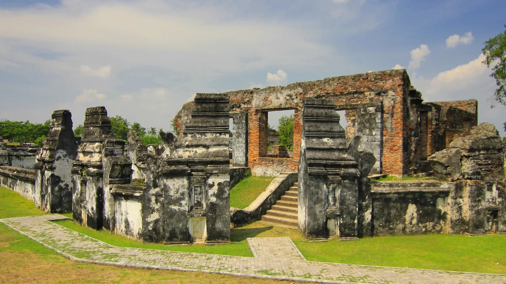

Zona 5: Peninggalan & Kolonial
Warisan Sejarah dan Akhir Kerajaan Banten
🏛️ Peninggalan Fisik

Masjid Agung Banten

Keraton Surosowan

Benteng Speelwijk

Keraton Kaibon
🏺 Artefak Peninggalan

Koin Emas (Kasha)

Koin Timah (Picis)

Keramik Asing

Senjata Tradisional
⚔️ Kebijakan Kolonial VOC
- Monopoli Perdagangan Lada - VOC memaksa Banten menjual lada hanya kepada mereka dengan harga sepihak
- Pengusiran Pedagang Eropa Lain - Inggris, Denmark, Prancis, Portugis diusir dari Banten
- Pembangunan Benteng Speelwijk (1684) - Untuk memantau aktivitas kesultanan
- Intervensi Politik (Devide et Impera) - Belanda mendukung Sultan Haji melawan Sultan Ageng Tirtayasa
- Penguasaan Wilayah Lampung - Banten kehilangan daerah penghasil lada utama
🔥 Perlawanan Rakyat Banten
- Sultan Ageng Tirtayasa (1651-1683) - Perlawanan terorganisir melawan VOC, strategi blokade laut dan aliansi dengan Inglis
- Pemberontakan Ratu Bagus Buang & Kyai Tapa (1750-1753) - Perlawanan kerakyatan terhadap Sultan "boneka" VOC
- Geger Cilegon (1888) - Pemberontakan petani besar yang dipimpin ulama, simbol bangkitnya nasionalisme berbasis agama
📉 Dampak Kolonialisme
Politik
Runtuhnya kedaulatan Kesultanan (1813), dihapus Raffles menjadi wilayah keresidenan.
Ekonomi
Monopoli lada, kemiskinan sistemik, kerja rodi pembangunan Jalan Raya Pos.
Sosial & Budaya
Pelabuhan Karangantu mati, masyarakat berubah dari maritim menjadi agraris.
Perlawanan
Pesantren menjadi pusat konsolidasi anti-penjajah.
⭐ Fakta Penting
- Banten resmi dihapus sebagai kesultanan oleh Thomas Stamford Raffles pada 1813
- Geger Cilegon 1888 menjadi pemberontakan petani terbesar di abad ke-19
- Sultan Ageng Tirtayasa diasingkan Belanda setelah dikhianati putranya sendiri
- Benteng Speelwijk masih berdiri hingga kini sebagai saksi bisu kolonialisme